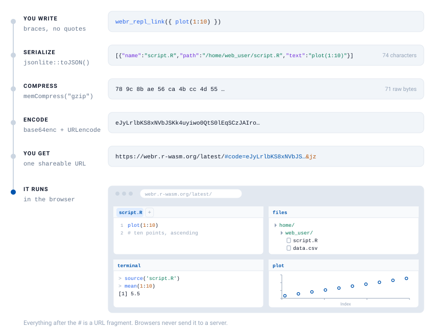
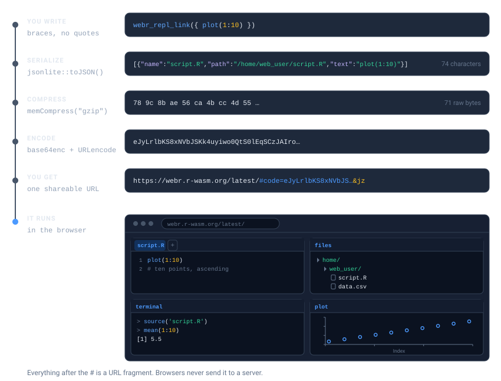
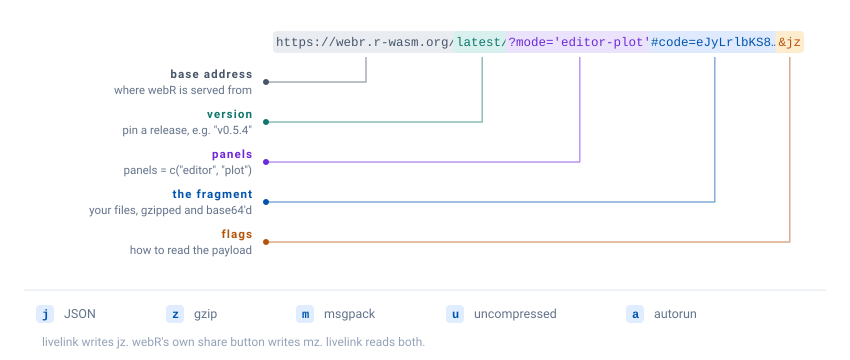
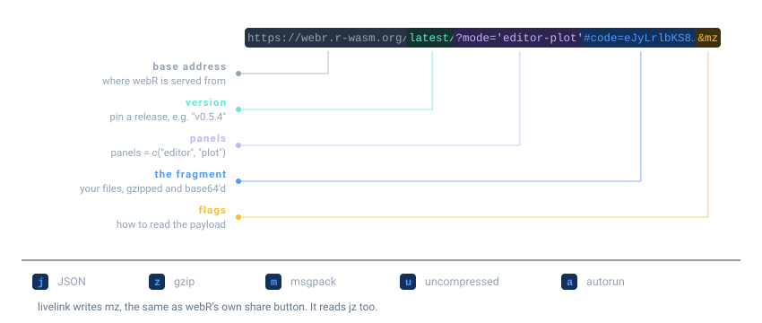

webr_repl_link("plot(1:10)")The idea
Sharing R code usually means asking someone to install something. livelink asks nothing: it packs your code into a URL, and the recipient clicks it and is looking at a running R session in their browser.
There is no server and no upload. The code is compressed and encoded into the part of the URL after the #, which browsers never send anywhere. The link is the payload.


Two destinations are supported:
Your first link
Pass some code. Get a link.
In a rendered document like this one the object becomes a clickable link, so you can open it right from the page. At an interactive console it prints its details instead, and as.character() gives you the bare URL string either way.
You can skip the quotes entirely and hand it a braced expression, which is easier to write and lets your editor highlight the code:
webr_repl_link({
data(mtcars)
plot(mtcars$mpg, mtcars$wt)
})Comments and expression input
Expression input reconstructs your code from R’s source references. Those exist in an interactive session, but not when a document is knitted, so comments inside
{ }are dropped from the link when this vignette is rendered.If your code has comments worth keeping, pass it as a string or a file path, or write it as a chunk. See Links inside documents.
You can also point at a file:
script <- tempfile(fileext = ".R")
writeLines(c("# fit a model", "lm(mpg ~ wt, data = mtcars)"), script)
webr_repl_link(script)…or, in an interactive session, copy code to your clipboard and call webr_repl_link() with no arguments at all.
Making it run on arrival
By default the recipient sees your code, ready to run. Set autorun = TRUE and it runs the moment the page opens, which is right for a demo and wrong for an exercise.
webr_repl_link("hist(rnorm(1000))", autorun = TRUE)Choosing what they see
webR opens with four panels: an editor for your code, a terminal for the R console, a files browser, and a plot pane. panels names the ones you want, and the rest never appear.


webr_repl_link("plot(1:10)", panels = c("editor", "plot"))The names are joined into the URL’s query string, ?mode='editor-plot', so you can read a link and tell what the recipient will land on. Omit panels and webR shows everything:
webr_repl_link("plot(1:10)")Trimming the panels is worth doing when the terminal would only invite someone to wander off. Teaching with livelink leans on it.
A Shiny app instead
shinylive_r_link() does the same for a Shiny application.
app <- "
library(shiny)
ui <- fluidPage(
sliderInput('bins', 'Bins:', 1, 50, 30),
plotOutput('hist')
)
server <- function(input, output) {
output$hist <- renderPlot(hist(faithful$waiting, breaks = input$bins))
}
shinyApp(ui, server)
"
shinylive_r_link(app, mode = "app")mode = "app" shows the running application. mode = "editor" shows the code beside it, which is what you want when the point is to teach. Python apps work the same way through shinylive_py_link().
Why a string, and not a braced expression?
shinylive_r_link({ ... })does work. But a Shiny app is source text destined for another runtime, and puttinglibrary(shiny)inside braces makes it look like R code your own package runs:R CMD checkscans vignettes forlibrary()calls and will report shiny as an undeclared dependency of livelink, which it is not.Braces are for R you want executed in webR. For a Shiny app, a string or a file path says what you mean.
What a link actually looks like
Nothing here is magic, and the URL is readable if you know where to look.


The flags at the end say how the payload was encoded: j for JSON, z for gzip, m for msgpack, u for uncompressed, a for autorun. livelink writes jz, and webR’s own share button writes mz. livelink reads both.
Going the other way
Because the files live in the URL, any link can be turned back into files, with no network access and no cooperation from a server.
url <- as.character(webr_repl_link("plot(1:10)"))
preview_webr_link(url)
#>
#> ── webR Link Preview ──
#>
#> URL:
#> <https://webr.r-wasm.org/latest/#code=eJyLrlbKS8xNVbJSKk4uyiwo0QtS0lEqSCzJAIroZ%2BTnpuqXpybFlxanFukjKShJrSgBKijIyS%2FRMLQyNNBUqo0FAJecF%2Fo%3D&jz>
#>
#> Files: 1
#> Total size: 10 bytes
#> Version: "latest"
#> Encoding: "jz"
#>
#> 'script.R' (10 bytes)
#>
#> Use print(preview, show_content = TRUE) to see file contentspreview_webr_link() inspects a link without writing anything, which is the sensible way to open a link someone sent you. decode_webr_link() extracts the files once you have decided you trust them.
Links inside a document
If you write in Quarto or R Markdown, a chunk can carry its own link. Add livelink: true to an ordinary chunk and it keeps running exactly as before, output and plots and all, with a link added underneath:
```{r}
#| livelink: true
#| autorun: true
data(mtcars)
plot(mtcars$mpg, mtcars$wt) # a comment that survives
```Your comments reach the link, which they do not when a { } expression is knitted. Links inside documents covers this properly: the hook, the engine, every chunk option, and how to set them once for a whole document.
Where to next
- Multi-file projects and Shiny apps: projects, apps in R and Python, and whole directories.
- Decoding and previewing links: turning a link back into files, and inspecting one before you trust it.
- Links inside documents: the chunk hook and the chunk engine, and every option they take.
- Teaching with livelink: exercise and solution pairs, whole course directories, and embedding links in notes.